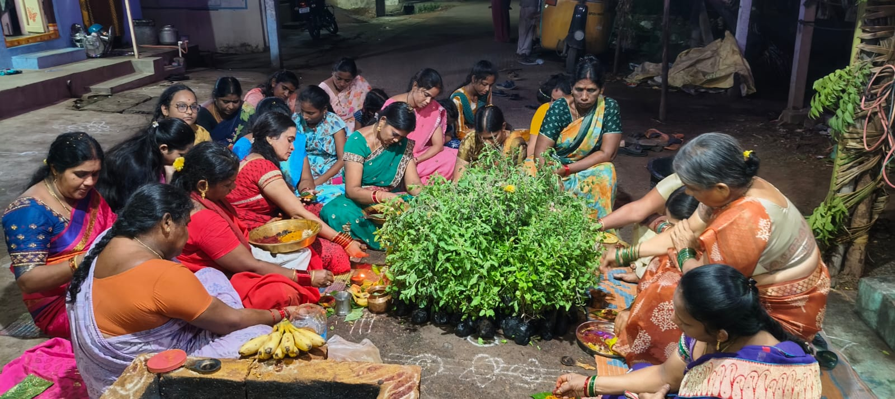
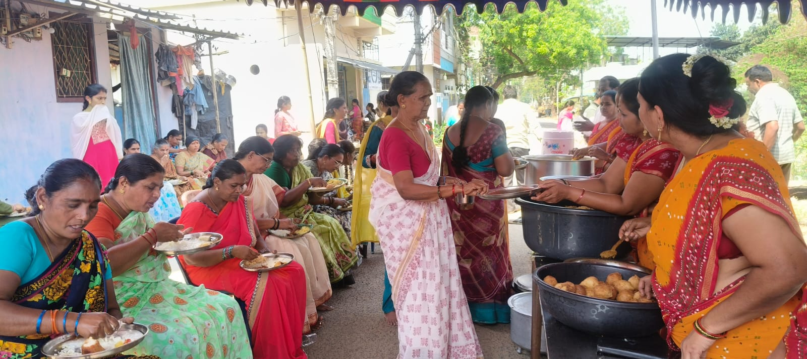
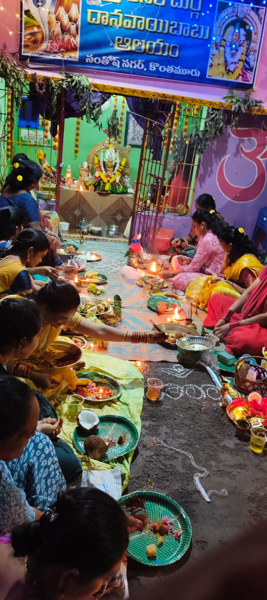
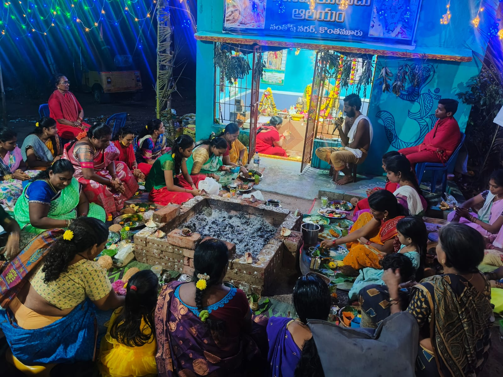

🔥 చండీ హోమం
మహా పవిత్రమైన చండీ హోమం ఎంతో భక్తి భావంతో నిర్వహించబడింది. భక్తులు అందరూ కలిసి దేవి ఆశీర్వాదాల కోసం ప్రార్థించారు.
ఈ పవిత్ర హోమం చెడు శక్తులను తొలగించి, శాంతి, సంపద మరియు ఆధ్యాత్మిక శక్తిని సమాజానికి అందిస్తుంది అని నమ్మకం.

🛕 ఆలయ పునర్ నిర్మాణం
ఆలయ పునర్ నిర్మాణ సంకుస్థాపన కార్యక్రమం ఆలయాన్ని తిరిగి నిర్మించే పవిత్ర ఆరంభాన్ని సూచిస్తుంది. ఇది కొత్త ఆధ్యాత్మిక శక్తితో ప్రారంభమవుతుంది.
భక్తులు గాఢమైన విశ్వాసంతో పాల్గొని, ఆలయ నిర్మాణం విజయవంతంగా పూర్తవ్వాలని ప్రార్థించారు.

🌿 తులసి పూజ
దసరా పండుగ సందర్భంగా తులసి పూజను సంప్రదాయ పద్ధతిలో ఎంతో భక్తితో నిర్వహించారు.
ఈ పవిత్ర పూజ పవిత్రత, సానుకూలతను సూచించి, ఆరోగ్యం, శాంతి మరియు సంపదను భక్తులకు ప్రసాదిస్తుంది.

🌕 పౌర్ణమి భోజనాలు
ప్రతి పౌర్ణమి రోజున భక్తులందరికీ ఉచిత భోజనం ప్రేమతో అందజేస్తారు. ఇది ఒక పవిత్ర సేవగా నిర్వహించబడుతుంది.
ఈ నెలవారీ సేవ దానం, ఐక్యత మరియు భక్తి భావాన్ని ప్రతిబింబిస్తూ, ప్రతి భక్తుడు ప్రసాదం పొందేలా చూస్తుంది.

📚 సరస్వతి పూజ
దసరా సందర్భంగా సరస్వతి పూజను ఎంతో భక్తి భావంతో భక్తుల సమక్షంలో నిర్వహించారు.
ఈ పవిత్ర పూజ జ్ఞానం, విద్య మరియు బుద్ధి దేవత అయిన సరస్వతి దేవికి అంకితం చేయబడింది.
భక్తులు ప్రార్థనలు చేసి, సంప్రదాయ పూజలు నిర్వహించి, దైవ కృపతో నిండిన ఆధ్యాత్మిక అనుభూతిని పొందారు.
📖 విద్యా దేవి ఆశీస్సులతో భక్తులు విద్యలో అభివృద్ధి పొందాలని ప్రార్థించారు.

🌺 కుంకుమ పూజ
ఆలయంలో కుంకుమ పూజను ఎంతో భక్తి భావంతో మహిళలు కలిసి నిర్వహించారు.
ఈ పూజలో అమ్మవారికి కుంకుమ సమర్పించి, కుటుంబ శ్రేయస్సు, ఐశ్వర్యం మరియు సౌభాగ్యం కోసం ప్రార్థనలు చేశారు.
భక్తుల సమూహంలో ఆధ్యాత్మిక వాతావరణం ఏర్పడి, ప్రతి ఒక్కరూ దైవ కృపను అనుభవించారు.